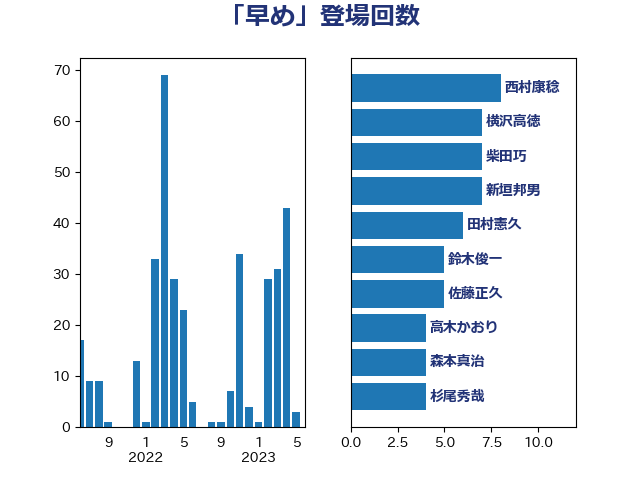

単語「早め」

| 西村康稔 | 自由民主党 | 8 回 |
| 横沢高徳 | 立憲民主党 | 7 回 |
| 柴田巧 | 日本維新の会 | 7 回 |
| 新垣邦男 | 立憲民主党 | 7 回 |
| 田村憲久 | 自由民主党 | 6 回 |
| 鈴木俊一 | 自由民主党 | 5 回 |
| 佐藤正久 | 自由民主党 | 5 回 |
| 高木かおり | 日本維新の会 | 4 回 |
| 森本真治 | 立憲民主党 | 4 回 |
| 杉尾秀哉 | 立憲民主党 | 4 回 |
| 早稲田ゆき | 立憲民主党 | 4 回 |
| 小里泰弘 | 自由民主党 | 4 回 |
| 塩村あやか | 立憲民主党 | 4 回 |
| 青山大人 | 立憲民主党 | 3 回 |
| 鈴木義弘 | 国民民主党 | 3 回 |
| 落合貴之 | 立憲民主党 | 3 回 |
| 緒方林太郎 | 無所属 | 3 回 |
| 福重隆浩 | 公明党 | 3 回 |
| 石川香織 | 立憲民主党 | 3 回 |
| 田村まみ | 国民民主党 | 3 回 |
| 清水貴之 | 日本維新の会 | 3 回 |
| 浜地雅一 | 公明党 | 3 回 |
| 浜口誠 | 国民民主党 | 3 回 |
| 梅谷守 | 立憲民主党 | 3 回 |
| 柚木道義 | 立憲民主党 | 3 回 |
| 東徹 | 日本維新の会 | 3 回 |
| 斉藤鉄夫 | 公明党 | 3 回 |
| 山際大志郎 | 自由民主党 | 3 回 |
| 寺田学 | 立憲民主党 | 3 回 |
| 城井崇 | 立憲民主党 | 3 回 |
| 吉田統彦 | 立憲民主党 | 3 回 |
| 高木真理 | 立憲民主党 | 2 回 |
| 馬場伸幸 | 日本維新の会 | 2 回 |
| 青柳陽一郎 | 立憲民主党 | 2 回 |
| 長浜博行 | 無所属 | 2 回 |
| 長峯誠 | 自由民主党 | 2 回 |
| 鈴木敦 | 国民民主党 | 2 回 |
| 鈴木宗男 | 日本維新の会 | 2 回 |
| 逢坂誠二 | 立憲民主党 | 2 回 |
| 谷田川元 | 立憲民主党 | 2 回 |
| 谷川とむ | 自由民主党 | 2 回 |
| 谷公一 | 自由民主党 | 2 回 |
| 西野太亮 | 自由民主党 | 2 回 |
| 藤木眞也 | 自由民主党 | 2 回 |
| 萩生田光一 | 自由民主党 | 2 回 |
| 芳賀道也 | 国民民主党 | 2 回 |
| 笠浩史 | 無所属 | 2 回 |
| 竹詰仁 | 国民民主党 | 2 回 |
| 穀田恵二 | 日本共産党 | 2 回 |
| 福田昭夫 | 立憲民主党 | 2 回 |
| 神田潤一 | 自由民主党 | 2 回 |
| 礒崎哲史 | 国民民主党 | 2 回 |
| 石垣のりこ | 立憲民主党 | 2 回 |
| 白石洋一 | 立憲民主党 | 2 回 |
| 田村智子 | 日本共産党 | 2 回 |
| 片山大介 | 日本維新の会 | 2 回 |
| 熊田裕通 | 自由民主党 | 2 回 |
| 渡辺創 | 立憲民主党 | 2 回 |
| 池下卓 | 日本維新の会 | 2 回 |
| 榛葉賀津也 | 国民民主党 | 2 回 |
| 梅村みずほ | 日本維新の会 | 2 回 |
| 庄子賢一 | 公明党 | 2 回 |
| 平山佐知子 | 無所属 | 2 回 |
| 平将明 | 自由民主党 | 2 回 |
| 岡田克也 | 立憲民主党 | 2 回 |
| 山岸一生 | 立憲民主党 | 2 回 |
| 小熊慎司 | 立憲民主党 | 2 回 |
| 小山展弘 | 立憲民主党 | 2 回 |
| 太栄志 | 立憲民主党 | 2 回 |
| 堀内詔子 | 自由民主党 | 2 回 |
| 古川元久 | 国民民主党 | 2 回 |
| 伊藤孝江 | 公明党 | 2 回 |
| 仁木博文 | 無所属 | 2 回 |
| 井林辰憲 | 自由民主党 | 2 回 |
| 中島克仁 | 立憲民主党 | 2 回 |
| 鬼木誠 | 立憲民主党 | 1 回 |
| 高橋英明 | 日本維新の会 | 1 回 |
| 高橋千鶴子 | 日本共産党 | 1 回 |
| 青木愛 | 立憲民主党 | 1 回 |
| 阿部弘樹 | 日本維新の会 | 1 回 |
| 阿部司 | 日本維新の会 | 1 回 |
| 長谷川英晴 | 自由民主党 | 1 回 |
| 金子恭之 | 自由民主党 | 1 回 |
| 金城泰邦 | 公明党 | 1 回 |
| 野田国義 | 立憲民主党 | 1 回 |
| 遠藤良太 | 日本維新の会 | 1 回 |
| 遠藤敬 | 日本維新の会 | 1 回 |
| 西銘恒三郎 | 自由民主党 | 1 回 |
| 西村智奈美 | 立憲民主党 | 1 回 |
| 藤井比早之 | 自由民主党 | 1 回 |
| 荒井優 | 立憲民主党 | 1 回 |
| 若松謙維 | 公明党 | 1 回 |
| 舩後靖彦 | れいわ新選組 | 1 回 |
| 羽田次郎 | 立憲民主党 | 1 回 |
| 篠原豪 | 立憲民主党 | 1 回 |
| 竹内真二 | 公明党 | 1 回 |
| 神谷宗幣 | 参政党 | 1 回 |
| 石田昌宏 | 自由民主党 | 1 回 |
| 石原宏高 | 自由民主党 | 1 回 |
| 石井拓 | 自由民主党 | 1 回 |
| 田村貴昭 | 日本共産党 | 1 回 |
| 湯原俊二 | 立憲民主党 | 1 回 |
| 浅野哲 | 国民民主党 | 1 回 |
| 河野義博 | 公明党 | 1 回 |
| 河野太郎 | 自由民主党 | 1 回 |
| 河西宏一 | 公明党 | 1 回 |
| 江藤拓 | 自由民主党 | 1 回 |
| 永井学 | 自由民主党 | 1 回 |
| 比嘉奈津美 | 自由民主党 | 1 回 |
| 横山信一 | 公明党 | 1 回 |
| 森田俊和 | 立憲民主党 | 1 回 |
| 柳ヶ瀬裕文 | 日本維新の会 | 1 回 |
| 枝野幸男 | 立憲民主党 | 1 回 |
| 松本尚 | 自由民主党 | 1 回 |
| 杉久武 | 公明党 | 1 回 |
| 本田太郎 | 自由民主党 | 1 回 |
| 斎藤嘉隆 | 立憲民主党 | 1 回 |
| 斎藤アレックス | 国民民主党 | 1 回 |
| 後藤祐一 | 立憲民主党 | 1 回 |
| 岩谷良平 | 日本維新の会 | 1 回 |
| 山田賢司 | 自由民主党 | 1 回 |
| 山田俊男 | 自由民主党 | 1 回 |
| 山崎正恭 | 公明党 | 1 回 |
| 山岡達丸 | 立憲民主党 | 1 回 |
| 小川淳也 | 立憲民主党 | 1 回 |
| 小寺裕雄 | 自由民主党 | 1 回 |
| 宮本徹 | 日本共産党 | 1 回 |
| 大石あきこ | れいわ新選組 | 1 回 |
| 大島九州男 | れいわ新選組 | 1 回 |
| 大塚耕平 | 国民民主党 | 1 回 |
| 大串正樹 | 自由民主党 | 1 回 |
| 大串博志 | 立憲民主党 | 1 回 |
| 堤かなめ | 立憲民主党 | 1 回 |
| 國重徹 | 公明党 | 1 回 |
| 国光あやの | 自由民主党 | 1 回 |
| 嘉田由紀子 | 無所属 | 1 回 |
| 吉田宣弘 | 公明党 | 1 回 |
| 吉田久美子 | 公明党 | 1 回 |
| 吉田はるみ | 立憲民主党 | 1 回 |
| 倉林明子 | 日本共産党 | 1 回 |
| 住吉寛紀 | 日本維新の会 | 1 回 |
| 伴野豊 | 立憲民主党 | 1 回 |
| 伊藤岳 | 日本共産党 | 1 回 |
| 伊波洋一 | 無所属 | 1 回 |
| 仁比聡平 | 日本共産党 | 1 回 |
| 井坂信彦 | 立憲民主党 | 1 回 |
| 中川康洋 | 公明党 | 1 回 |
| 上杉謙太郎 | 自由民主党 | 1 回 |
| 三浦信祐 | 公明党 | 1 回 |
| おおつき紅葉 | 立憲民主党 | 1 回 |